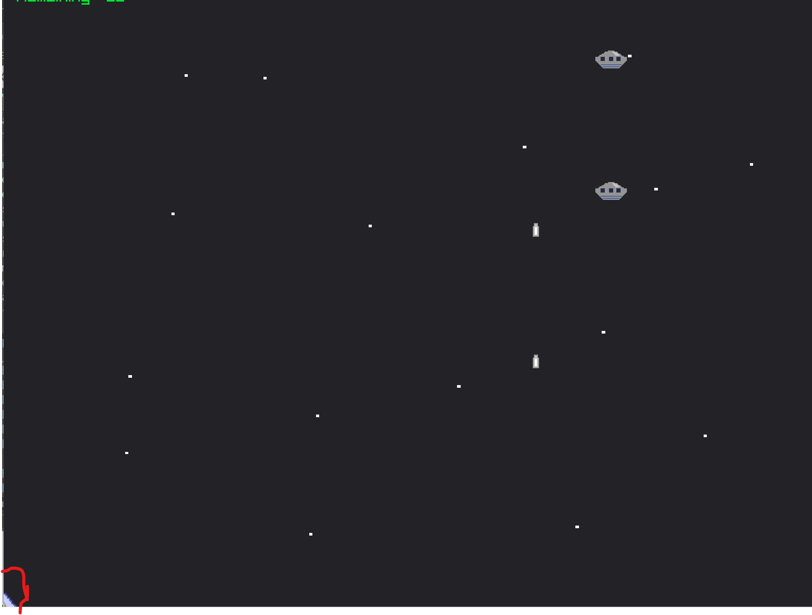

I was coding a "computer space"- like game, and one day I found something unusual. my spacecraft should be at a position " 250 , 250 " near top left corner of the window when the game starts.
However, it was nowhere to be fonud. Looking through my code and executing my game for several times, the spacecraft was positioned at bottom left of the screen.

immediately , I recalled that the position of the player spacecraft was updated every frame, so it must have something to do with this weird behaviour. I commented out the updating part of the code, and the spacecraft was at (250, 250) again, back to normal.
//update player_ship positions
float radian = (-45.0f + player_ship.rotation) * 3.141592f / 180.0f;
player_ship.position.x += (player_ship.power * (cos(radian) + sin(radian)) * GetFrameTime());
if(player_ship.position.x > SCREEN_WIDTH)
{
player_ship.position.x = 0.0f;
}
else if( player_ship.position.x < 0.0f)
{
player_ship.position.x = SCREEN_WIDTH;
}
player_ship.position.y += (player_ship.power * (sin(radian) - cos (radian)) * GetFrameTime());
if(player_ship.position.y > SCREEN_HEIGHT)
{
player_ship.position.y = 0.0f;
}
else if(player_ship.position.y < 0.0f)
{
player_ship.position.y = SCREEN_HEIGHT;
}
Reading the spacecraft position updating line of the code, I found that player_ship.power had a ridiculous value and
that was what made the location messed up. I assumed that I could find something at the initialization of player_ship and I did.
I forgot to initialize the power variable to zero as I should have been.
struct SpaceCraft player_ship;
//player_ship.power = 0.0f, this line was missing.
player_ship.position.x = 250;
player_ship.position.y = 250;
player_ship.state = ALIVE;
player_ship.rotation = 0.0f;
player_ship.fuel = 100.0f;
player_ship.collision_radius = 25.0f;
After set its value to zero, my spacecraft worked well. But then, several doubts came to my mind "why now?". "How was this working all fine before?" "Was it was just luck that the value of power was
begin zero all the time?" I looked at my code again and discovered that I added char DebugBuffer[2] for a debugging purpose. I assumed that it might have something to do with the value of
player_ship power.
char RemainTimeBuffer[15] = { 0 };
char DebugBuffer[2];
struct SpaceCraft player_ship;
player_ship.power = 0.0f,
player_ship.position.x = 250;
player_ship.position.y = 250;
player_ship.state = ALIVE;
player_ship.rotation = 0.0f;
player_ship.fuel = 100.0f;
player_ship.collision_radius = 25.0f;
Surprisingly, when I changed the size of DebugBuffer to 10 or 12, the position of the spacecraft was all normal again. (It was at the position (250,250) when the game starts). I experimented with different sizes and
I found that the value of player_ship.power became garbage when the size of DebugBuffer was between 2 to 5. Otherwise, the value of the power was zero.
This was weird. the size of an array variable seems to be affecting next variable's value. I speculated that the memory space of two variables ( DebugBuffer and player_ship.power ) might overlap because
maybe the memory is not allocated when the variable is declared? To find out, I went to StackOverflow and did some research on when the memory is stored for a variable in C.
c - Does variable declaration mean memory allocation? - Stack Overflow
Nothing in the standard mandates that there is a stack. And nothing in the standard mandates that a local variable needs memory allocated for it. The variable could be placed in a register, or even removed altogether as an optimization.
To look for more official documentation. I downloaded C99 Spec PDF and read declaration part.
5 A declaration specifies the interpretation and attributes of a set of identifiers. A definition of an identifier is a declaration for that identifier that: — for an object, causes storage to be reserved for that object; — for a function, includes the function body;101) — for an enumeration constant or typedef name, is the (only) declaration of the identifier.
and also opened the classic K&R and found Declarations on page 210.
Declarations specify the interpretation given to each identifier; they do not necessarily reserve storage associated with the identifier. Declarations that reserve storage are called definitions.
The C Programing Language by Brian W. Kernighan and Dennis M. Ritchie
Indeed, declarations do not necessarily reserve memory space for a variable. Definition of that variable does. So, is it possible that the memory space of the two variables may overlap when they are only declared, but not defined? But then wait.. when does a declaration or a definition for a variable happens in C ? is the initialization? And I found this on GeeksforGeeks.
Difference between Definition and Declaration - GeeksforGeeks
Declaration of a variable is for informing the compiler of the following information: name of the variable, type of value it holds, and the initial value if any it takes. i.e., declaration gives details about the properties of a variable. Whereas, Definition of a variable says where the variable gets stored. i.e., memory for the variable is allocated during the definition of the variable. In C language definition and declaration for a variable takes place at the same time.
how stupid! I equated definition with initialization. I was thinking that declaration is a variable "declaration" without initializing it. In C language, declaration and definition for a variable happen ata the same time.
char DebugBuffer[2];
This variable is declared and defined. So memory for it is allocated. Thus, the memory of the array overlaps the memory of the next variable is not possible. I realize how ridiculous that sounds as I write it lol. If
the variable is only declared using extern keyword, there is nothing to overlap in the first place because there is no memory allocation for that declared-only variable
so then what? what is happening in my code? When the size of the character array buffer changes, the value of player_ship.power changes too.
It turns out that the answer was simple. I was actually lucky not getting the garbage value before. the value could have been garbage anytime because I did not initialize it. Obvisouly, there was no guarantee that the value of
power was zero all the time. Because the value of player_ship.power was zero most of the time, but had garbage value only when DebugBuffer 's size was from 2 to 5, I assumed that the size of that array
must matter somehow.
When using a struct, dont forget to initialize all the members! Or better, I will use memset from now on to ensure that the memory space allocated had no garbage, but the initial values that I set.
struct SpaceCraft player_ship;
memset(&player_ship,0,sizeof(struct SpaceCraft));
player_ship.power = 0.0f,
player_ship.position.x = 250;
player_ship.position.y = 250;
player_ship.state = ALIVE;
player_ship.rotation = 0.0f;
player_ship.fuel = 100.0f;
player_ship.collision_radius = 25.0f;
After this incident, I realized that I never finished the K&R. I read it time to time here and there, but I never "studied" it, focusing line by line and try to understand fully what it means. I should make some time for reading too, not just using all my free time for creating a game.
Happy Coding :)